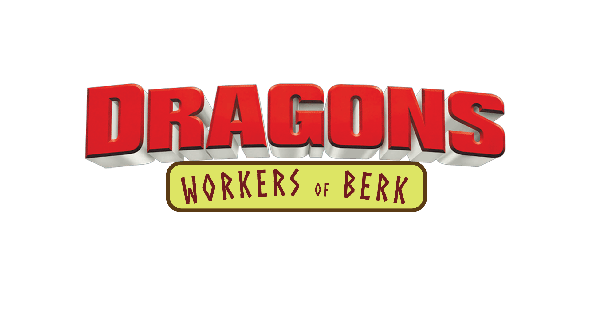
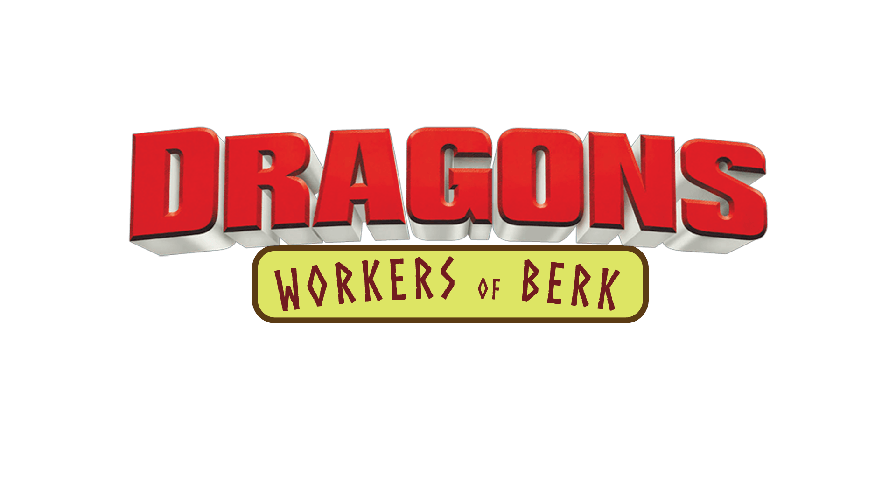

Dragons: Workers of Berk
Dragons: Workers of Berk is a How to Train Your Dragon fan-fiction. It takes place in the two years between Defenders of Berk and Race to the Edge. In canon, Berk was at peace at this time. One way this fiction will break canon, is that there will be villains during this story. Stories will try to include villains as little as possible and mostly include needed work done around the beloved island of Berk performed by vikings and dragons alike. The stories, while having eccentic characters at times, will have a central message. The storylines will be chapter based but work in a complete storyline. It is unknown how many chapters it will be but it will be capped at the two year in universe limit before Race to the Edge takes place. It will feature the main ensemble of characters that were around at this period, save Dagur and Heather, for reasons those familiar with the universe know.
Chapters:
News: (in order)
- Troy: I have posted chapter 1. (March 28th, 2020)